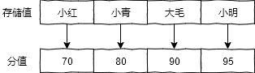
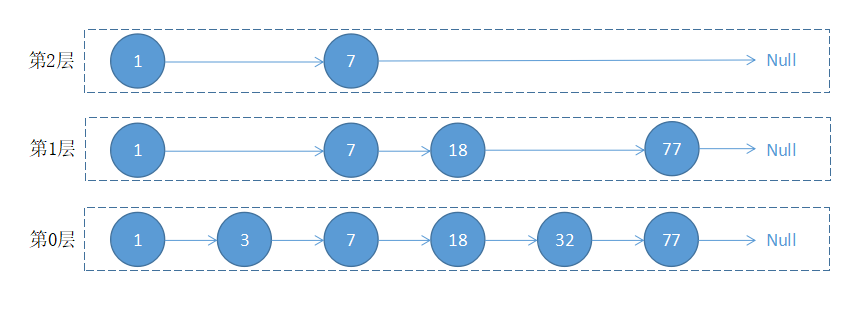

- 01 Redis 是如何执行的.md.html
- 02 Redis 快速搭建与使用.md.html
- 03 Redis 持久化——RDB.md.html
- 04 Redis 持久化——AOF.md.html
- 05 Redis 持久化——混合持久化.md.html
- 06 字符串使用与内部实现原理.md.html
- 07 附录：更多字符串操作命令.md.html
- 08 字典使用与内部实现原理.md.html
- 09 附录：更多字典操作命令.md.html
- 10 列表使用与内部实现原理.md.html
- 11 附录：更多列表操作命令.md.html
- 12 集合使用与内部实现原理.md.html
- 13 附录：更多集合操作命令.md.html
- 14 有序集合使用与内部实现原理.md.html
- 15 附录：更多有序集合操作命令.md.html
- 16 Redis 事务深入解析.md.html
- 17 Redis 键值过期操作.md.html
- 18 Redis 过期策略与源码分析.md.html
- 19 Redis 管道技术——Pipeline.md.html
- 20 查询附近的人——GEO.md.html
- 21 游标迭代器（过滤器）——Scan.md.html
- 22 优秀的基数统计算法——HyperLogLog.md.html
- 23 内存淘汰机制与算法.md.html
- 24 消息队列——发布订阅模式.md.html
- 25 消息队列的其他实现方式.md.html
- 26 消息队列终极解决方案——Stream（上）.md.html
- 27 消息队列终极解决方案——Stream（下）.md.html
- 28 实战：分布式锁详解与代码.md.html
- 29 实战：布隆过滤器安装与使用及原理分析.md.html
- 30 完整案例：实现延迟队列的两种方法.md.html
- 31 实战：定时任务案例.md.html
- 32 实战：RediSearch 高性能的全文搜索引擎.md.html
- 33 实战：Redis 性能测试.md.html
- 34 实战：Redis 慢查询.md.html
- 35 实战：Redis 性能优化方案.md.html
- 36 实战：Redis 主从同步.md.html
- 37 实战：Redis哨兵模式（上）.md.html
- 38 实战：Redis 哨兵模式（下）.md.html
- 39 实战：Redis 集群模式（上）.md.html
- 40 实战：Redis 集群模式（下）.md.html
- 41 案例：Redis 问题汇总和相关解决方案.md.html
- 42 技能学习指南.md.html
- 43 加餐：Redis 的可视化管理工具.md.html
14 有序集合使用与内部实现原理
有序集合类型 (Sorted Set) 相比于集合类型多了一个排序属性 score（分值），对于有序集合 ZSet 来说，每个存储元素相当于有两个值组成的，一个是有序结合的元素值，一个是排序值。有序集合的存储元素值也是不能重复的，但分值是可以重复的。
当我们把学生的成绩存储在有序集合中时，它的存储结构如下图所示：

下面我们先从有序集合的使用开始说起。
1 基础使用
1）添加一个或多个元素
语法：zadd key [NX|XX] [CH] [INCR] score member [score member ...] 示例：
127.0.0.1:6379> zadd zset1 10 java
(integer) 1
127.0.0.1:6379> zadd zset1 3 golang 4 sql 1 redis
(integer) 3
可以看出有序集合的添加是 zadd 键值 分值1 元素值1 分值2 元素值2 的形式添加的。
2）查询所有元素列表
语法：zrange key start stop [WITHSCORES] 示例：
127.0.0.1:6379> zrange zset 0 -1
1) "redis"
2) "mysql"
3) "java"
其中 -1 表示最后一个元素，查询结果包含开始和结束元素。
3）删除一个或多个元素(根据元素值)
语法：zrem key member [member ...] 示例：
127.0.0.1:6379> zrangebyscore zset1 0 -1 #查询所有元素
1) "golang"
2) "redis"
3) "sql"
4) "java"
127.0.0.1:6379> zrem zset1 redis sql #删除元素：reids、sql
(integer) 2
127.0.0.1:6379> zrange zset1 0 -1 #查询所有元素
1) "golang"
2) "java"
删除命令中如果包含了不存在的元素，并不会影响命令的正常执行，不存在的元素将会被忽略。
4）查询某元素的 score 值
语法：zscore key member 示例：
127.0.0.1:6379> zscore zset1 redis
"1"
5）查询 score 区间内元素
语法：zrangebyscore key min max [WITHSCORES] [LIMIT offset count] 示例：
127.0.0.1:6379> zrangebyscore zset1 3 10
1) "golang"
2) "redis"
3) "sql"
4) "java"
6）查询某元素排名
语法：zrank key member 示例：
127.0.0.1:6379> zadd zset 5 redis 10 java 8 mysql #创建有序集合
(integer) 3
127.0.0.1:6379> zrank zset java #查询元素排序
(integer) 2
127.0.0.1:6379> zrank zset redis
(integer) 0
可以看出，排名是从 0 开始的，排名可以理解为元素排序后的下标值。
更多操作命令，详见附录部分。
2 代码实战
下面来看有序集合在 Java 中的使用，同样先添加 Jedis 框架，示例代码如下：
import redis.clients.jedis.Jedis;
import java.util.HashMap;
import java.util.Map;
import java.util.Set;
public class ZSetExample {
public static void main(String[] args) {
Jedis jedis = new Jedis("127.0.0.1", 6379);
Map<String, Double> map = new HashMap<>();
map.put("小明", 80.5d);
map.put("小红", 75d);
map.put("老王", 85d);
// 为有序集合(ZSet)添加元素
jedis.zadd("grade", map);
// 查询分数在 80 分到 100 分之间的人(包含 80 分和 100 分)
Set<String> gradeSet = jedis.zrangeByScore("grade", 80, 100);
System.out.println(gradeSet); // 输出：[小明, 老王]
// 查询小红的排名(排名从 0 开始)
System.out.println(jedis.zrank("grade", "小明")); // 输出：1
// 从集合中移除老王
jedis.zrem("grade", "老王");
// 查询有序集合中的所有元素(根据排名从小到大)
Set<String> range = jedis.zrange("grade", 0, -1);
System.out.println(range); // 输出：[小红, 小明]
// 查询有序集合中的所有元素(根据 score 从小到大)
Set<String> rangeByScore = jedis.zrangeByScore("grade", 0, 100);
System.out.println(rangeByScore);
}
}
3 内部实现
有序集合是由 ziplist (压缩列表) 或 skiplist (跳跃表) 组成的。
1）ziplist
当数据比较少时，有序集合使用的是 ziplist 存储的，如下代码所示：
127.0.0.1:6379> zadd myzset 1 db 2 redis 3 mysql
(integer) 3
127.0.0.1:6379> object encoding myzset
"ziplist"
从结果可以看出，有序集合把 myset 键值对存储在 ziplist 结构中了。 有序集合使用 ziplist 格式存储必须满足以下两个条件：
- 有序集合保存的元素个数要小于 128 个；
- 有序集合保存的所有元素成员的长度都必须小于 64 字节。
如果不能满足以上两个条件中的任意一个，有序集合将会使用 skiplist 结构进行存储。 接下来我们来测试以下，当有序集合中某个元素长度大于 64 字节时会发生什么情况？ 代码如下：
127.0.0.1:6379> zadd zmaxleng 1.0 redis
(integer) 1
127.0.0.1:6379> object encoding zmaxleng
"ziplist"
127.0.0.1:6379> zadd zmaxleng 2.0 aaaaaaaaaaaaaaaaaaaaaaaaaaaaaaaaaaaaaaaaaaaaaaaaaaaaaaaaaaaaaaaaa
(integer) 1
127.0.0.1:6379> object encoding zmaxleng
"skiplist"
通过以上代码可以看出，当有序集合保存的所有元素成员的长度大于 64 字节时，有序集合就会从 ziplist 转换成为 skiplist。
小贴士：可以通过配置文件中的 zset-max-ziplist-entries（默认 128）和 zset-max-ziplist-value（默认 64）来设置有序集合使用 ziplist 存储的临界值。
2）skiplist
skiplist 数据编码底层是使用 zset 结构实现的，而 zset 结构中包含了一个字典和一个跳跃表，源码如下：
typedef struct zset {
dict *dict;
zskiplist *zsl;
} zset;
更多关于跳跃表的源码实现，会在后面的章节详细介绍。
① 跳跃表实现原理
跳跃表的结构如下图所示： 
根据以上图片展示，当我们在跳跃表中查询值 32 时，执行流程如下：
- 从最上层开始找，1 比 32 小，在当前层移动到下一个节点进行比较；
- 7 比 32 小，当前层移动下一个节点比较，由于下一个节点指向 Null，所以以 7 为目标，移动到下一层继续向后比较；
- 18 小于 32，继续向后移动查找，对比 77 大于 32，以 18 为目标，移动到下一层继续向后比较；
- 对比 32 等于 32，值被顺利找到。
从上面的流程可以看出，跳跃表会想从最上层开始找起，依次向后查找，如果本层的节点大于要找的值，或者本层的节点为 Null 时，以上一个节点为目标，往下移一层继续向后查找并循环此流程，直到找到该节点并返回，如果对比到最后一个元素仍未找到，则返回 Null。
② 为什么是跳跃表？而非红黑树？
因为跳跃表的性能和红黑树基本相近，但却比红黑树更好实现，所有 Redis 的有序集合会选用跳跃表来实现存储。
4 使用场景
有序集合的经典使用场景如下：
- 学生成绩排名
- 粉丝列表，根据关注的先后时间排序
5 小结
通过本文的学习我们了解到，有序集合具有唯一性和排序的功能，排序功能是借助分值字段 score 实现的，score 字段不仅可以实现排序功能，还可以实现数据的赛选与过滤的功能。我们还了解到了有序集合是由 压缩列表 (ziplist) 或跳跃列表 (skiplist) 来存储的，当元素个数小于 128 个，并且所有元素的值都小于 64 字节时，有序集合会采取 ziplist 来存储，反之则会用 skiplist 来存储，其中 skiplist 是从上往下、从前往后进行元素查找的，相比于传统的普通列表，可能会快很多，因为普通列表只能从前往后依次查找。